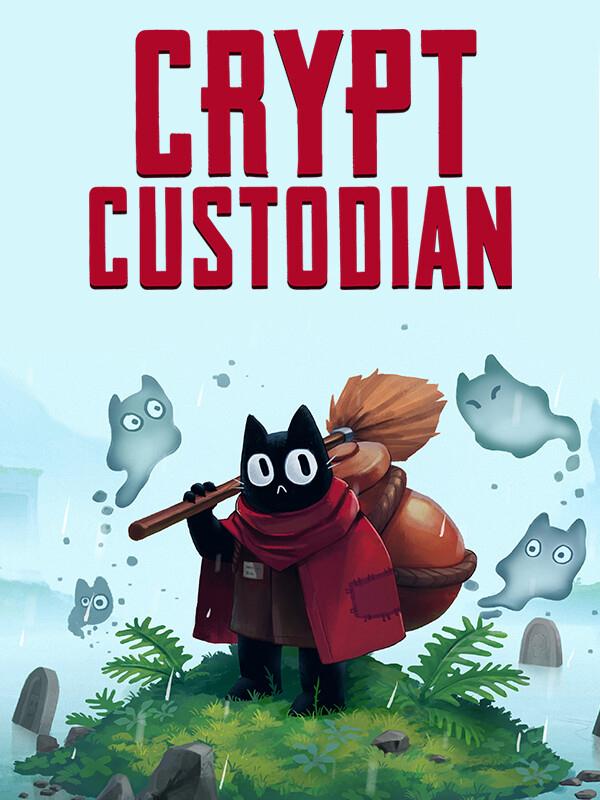

Crypt Custodian
Crypt Custodian
Details
|  | |
| Playtime | Not Played |
| Last Activity | Never |
| Added | 2025-02-06 22:55:28 |
| Modified | 2025-12-19 11:05:13 |
| Completion Status | Not Played |
| Library | Steam |
| Source | Steam |
| Platform | PC (Windows) |
| Release Date | 2024-08-27 |
| Community Score | 80 |
| Critic Score | 80 |
| User Score | |
| Genre | Adventure Indie Platform Role-playing (RPG) |
| Developer | Kyle Thompson |
| Publisher | H2 Interactive Co., Ltd. Kyle Thompson Top Hat Studios |
| Feature | Single Player |
| Links | Steam Twitch Discord GOG Nintendo Playstation |
| Tag | Action Action RPG Action-Adventure Adventure Atmospheric Cats Colorful Cute Dungeon Crawler Exploration Funny Hand-drawn Indie Metroidvania Nonlinear Platformer Puzzle RPG Singleplayer Story Rich |
Description


Crypt Custodian is a charming metroidvania/zelda-like about cleaning up the afterlife.
You play as Pluto - a mischievous cat who has just died, and landed in the afterlife's palace. After a brief and disastrous meeting with the Afterlife Guardian - Kendra - you are banished from the palace and sentenced to clean... FOREVER!!
Explore the vast grounds that surround the palace, battle beasts with your trusty broom, and gain new abilities to expand your map. Solve puzzles, discover secrets, and… organize an ambush to break back into the palace!


A Charming Cast Of Characters
Meet and befriend all the other bad ghosts who live outside the palace. Learn how they died, and what caused them to face eternal banishment! And then head on over to the local haunt- The Sinner’s Inn- to chat with the ghosts you meet, and upgrade your gear.Tons of Upgrades
Complete puzzles, battle epic bosses, and clean your way through ruined dungeons in order to collect new upgrades and abilities. Customize your play style by mix-and-matching your upgrades, and use the abilities you collect to expand your world.A Lively Interconnected World
Traverse a vast landscape with secrets hiding at every corner. Form your own path and discover the afterlife’s many secrets at your own pace.